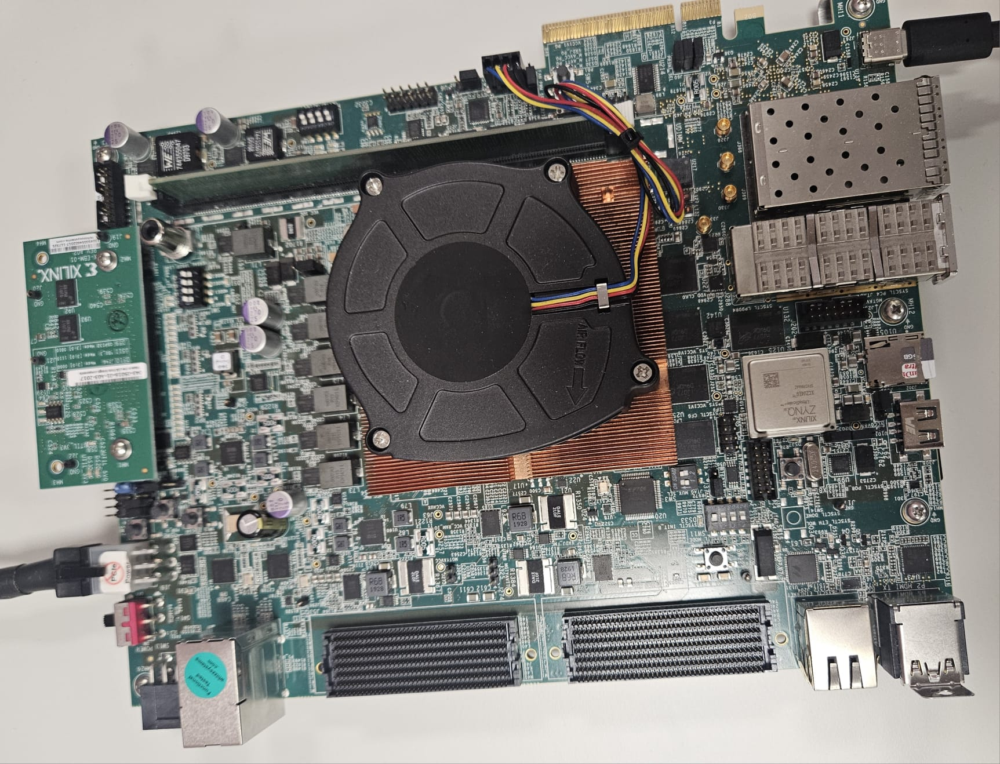
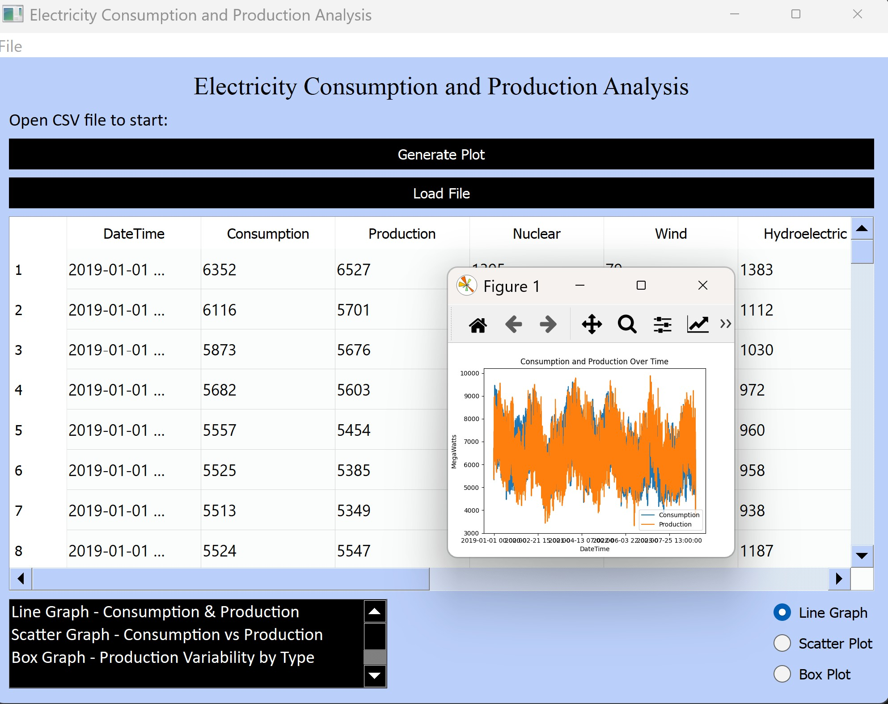
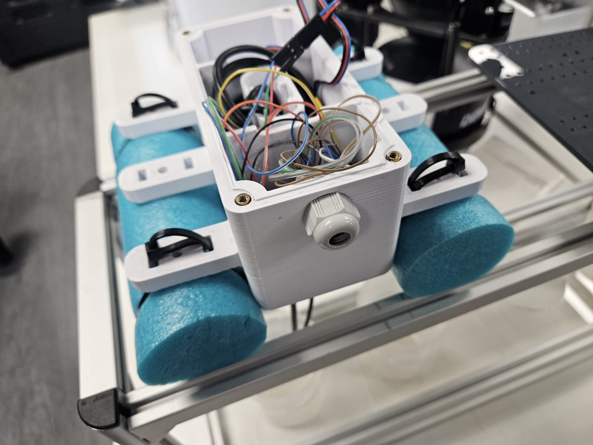
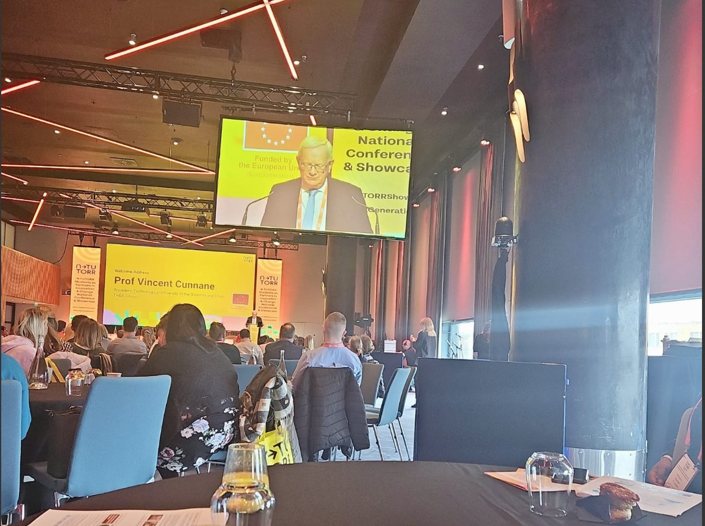
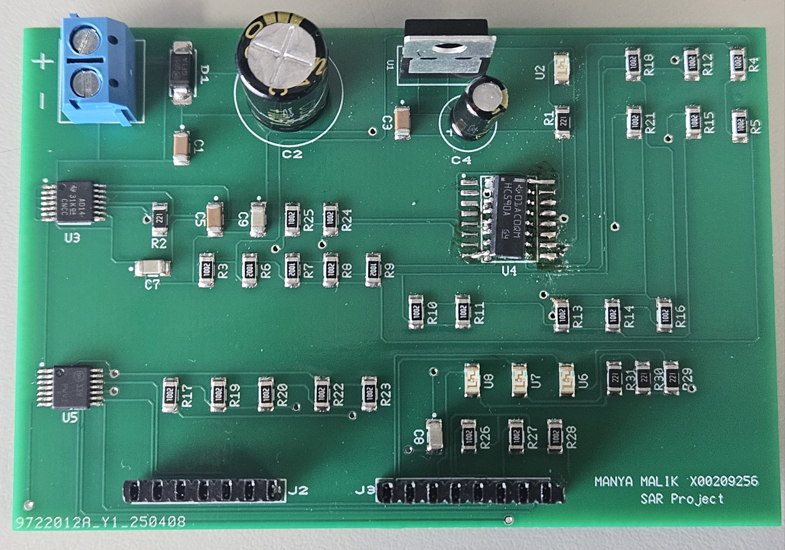
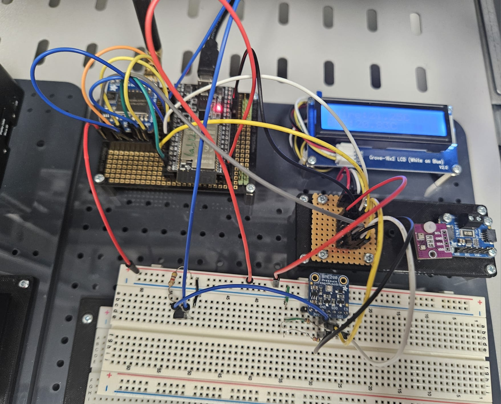

- python: oop, pandas, matplotlib, pyQt
- Verilog
- java
- assembly code
- Networking
- CAD: multisim, ultiboard
- Embedded Systems
- IoT: Arduino, Internet of Things (Bluetooth, LoRa, Wi-Fi, SPI, One-Wire, I2C)
- html
- css
- timing analysis in FPGAs
- MATLAB
Education
Work Experience & Projects

FPGA Project Collaboration
Working under the mentorship of an AMD engineer to enhance technical skills in FPGA development, this collaboration provides invaluable exposure
to industry-standard tools and a professional work environment, with regular communication with supervisors and progress presentations.
Currently furthering my FPGA skills by working on a project that involves debugging over a PCIe link using segmented configuration.

Data Analysis Application
Developed a Python-based file analysis application to read in a data file and present it in a tabular format, providing options for
generatng different kinds of graphs.
Designed with efficiency in mind, the application streamlines data analysis by creating a visual representation of extensive data.


Arduino-based water quality sensor
Worked on developing an Arduino-based water quality sensor as a part of a water sustainability project to analyse the campus lake, collaborating
with interdisciplinary teams and integrating scientific knowledge.
Achievements/Tasks
- Worked with a team to create an Arduino based water quality sensor.
- Created visual data representations for presentations and meetings.
- Presented our work at the N-TUTORR Partners in Innovation and Change National Showcase and Conference at Croke park.
- Presented our work for the green campus evaluation of TU Dublin.

Tilt/orientation sensor system
Developed a 2D orientation sensing system using an ADXL335 analog sensor and an Arduino with a successive approximation ADC PCB.
- Created a prototype on a Vero-board and tested it with an Arduino.
- Designed the ADC on Multisim and had the PCB manufactured.
- Acquired and processed real-time analog voltage signals from the accelerometer's X and Y axes to determine board tilt.
- Implemented mathematical formulas using an Arduino to convert voltage outputs into angle measurements representing the vertical and horizontal orientation of the PCB.

Weather station
Designed and implemented a smart weather monitoring system using multiple communication protocols for real-time data acquisition and
transmission.
- The BME280 and DS18B20 sensors measure temperature, pressure, and humidity with the readings displayed on an LCD via I2C.
- SPI was used for LoRa integration which enables long-range transmission of the readings from the sensors.
- Wi-Fi hosts a web server to display sensor data in real time.
- Bluetooth allows readings to be accessed on a mobile device through a serial terminal app.